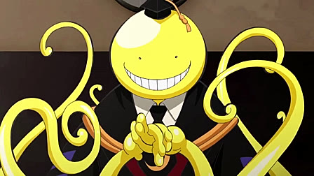
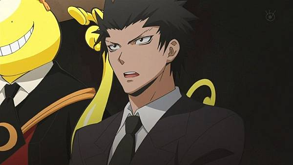
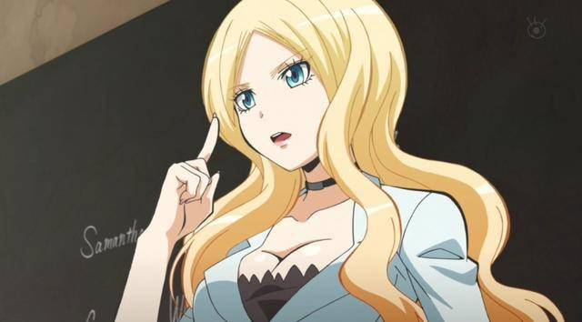
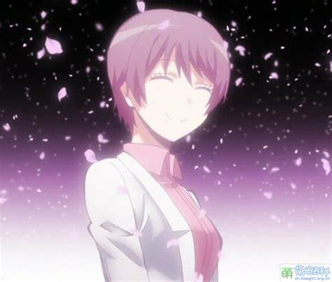
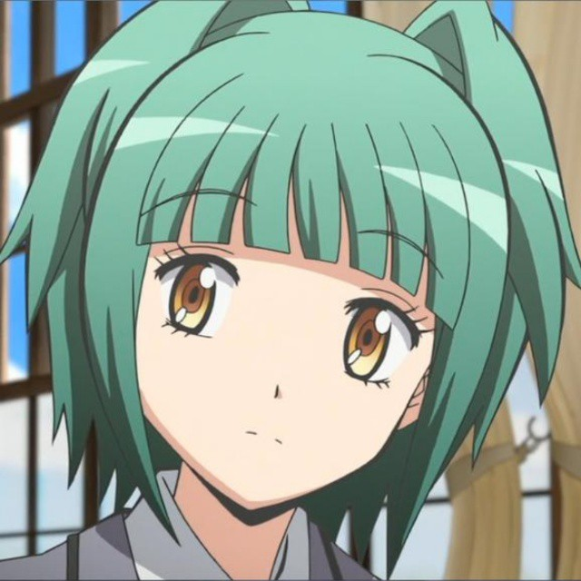
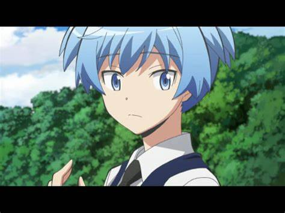
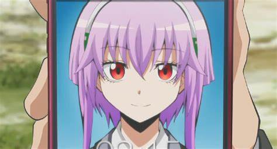

殺老師（ころせんせー，Koro-sensei）
本故事的主角。他是椚丘中學3年E班的導師。最初、他被認為是將月球炸毀七成的罪魁禍首，並揚言要在隔年三月炸毀地球，儘管世界各國的政府都無法捉拿他，但他主動提出交換條件、要求擔任3年E班的導師，而日本政府也將暗殺任務分派給E班的學生。於是，教師向學生傳授知識、而學生對教師兵刃相向的奇妙環境便就此誕生了。他初至E班時表示自己沒有名字，學生之一茅野便為他取了「殺老師」這一暱稱是將日文的「殺不死」（殺せない）和「教師」（先生）合寫而成。
他的外表是章魚型的、有大頭和多根觸手。皮膚的顏色會隨心情變化，通常是黃色。他可以用20馬赫速度移動，這讓他能在短時間內穿梭於世界各地，並成為難以捉拿的目標。他十分聰明，幾乎可以一個人教授所有科目，但隨著故事進展，學生也漸漸發現他的弱點，包括特製材質製成的匕首和子彈，學生們以此為武器向他進攻，但都碰不到他分毫。
烏間惟臣（烏間 惟臣（からすま ただおみ），Karasuma Tadaomi）
日本政府防衛省官員，前軍隊精銳部隊成員。他初次登場時是為了向E班宣布日本政府與殺老師的交易，並賦予他們暗殺殺老師的任務。之後、他擔任E班的副導師和體育教師，傳授學生暗殺技巧並監視任務進度。儘管他很善良，但嚴格且不苟言笑，與學生保持距離以保持自己的專業態度。
他在軍隊中的名聲顯赫，戰鬥技巧高超，能輕易將伊莉娜的師傅羅夫洛擊倒，也能在吸入毒氣的情況下擊倒專業殺手。他是少數幾個發現渚的暗殺才能的人之一。 在結局時與伊莉娜結婚，並成為日本情報部的高級幹部。
伊莉娜·耶拉維琪（イリーナ・イェラビッチ，Irīna Yelavich，塞爾維亞語：Ирина Јелавић/Irina Jelavić）
操塞爾維亞口音的性感女殺手，20歲。精通十種外語和色誘技巧。她受僱殺死殺老師，在失敗之後誓言復仇並暫時成為E班的外語教師。由於姓氏中「vich」（ヴィッチ）的發音近似於「Bitch」（ビッチ），因此被學生取了「Bitch老師」的外號。她負責教導學生外語和接待技巧，並以深吻懲罰在課堂上答不出問題的學生。
比起她的暗殺技巧，她更常以其它方式協助E班，她曾以色誘協助學生潛入敵營、並在學生被囚禁時為她們暗中夾帶武器。在E班的期間逐漸對烏間產生好感，最終與他結婚並加入防衛省，成為日本政府期下的間諜。
雪村亞久里（雪村 あぐり（ゆきむら あぐり，Yukimura Aguri）
前E班導師，他是茅野楓的姊姊、柳澤誇太郎的未婚妻。她參與柳澤的任務，並在殺老師還是人類時就與他相遇，負責監視並監控他的身體狀況，他們在這段期間培養了感情。當殺老師逃脫時，亞久里試圖讓他冷靜下來，但卻意外地被原本用來對付殺老師的武器所殺。
在她死前、亞久里將自己的學生託付給殺老師，而殺老師也答應了她。這個景象被茅野楓目擊，使他產生誤會。
3年e班的學生赤羽業（赤羽 業（あかばね かるま），Akabane Karuma）
業是渚最親密的朋友之一。他的個性自大驕傲，是班上最聰明、戰鬥能力也最強的學生，是第一個能在初次見面就傷害到殺老師的人。業的天賦在全校內數一數二，他原本是優秀的學生，但因為暴力事件讓他被下放至E班，他也因此對教師失去信任。但殺老師來到E班後讓他對此改觀，並開始在課業上發揮自己的實力，最終得以在期末考時以滿分奪得全校第一名。
除了渚以外，與他關係較好的同學包括：經常與中村莉櫻一起調戲渚；常委託奧田愛美調配惡作劇用的毒藥，也會向他透露心事；經常捉弄或指使頭腦不好的寺坂龍馬。 畢業後，他投身政治並企圖擴張自己的勢力版圖。
E-2磯貝悠馬（磯貝 悠馬（いそがい ゆうま)，Isogai Yuuma）
3年E班的男性班長。他的長相英俊、勤奮而且溫和，曾收過E班以外的學生所寫的情書。由於家境窮困、又有臥病在床的母親和年幼的弟妹，使得他必須要冒著違反校規的風險在咖啡廳打工，原本成績尚可的他也是因此而落入E班。
他在班上較要好的同學是前原，他們自小便是好友。他的同學們經常會上門光顧，而磯貝也很感謝他們。由於家境之故，他有著高超的料理才能，甚至能將觀賞用金魚製成佳餚，即使衣服全是便宜貨也能穿得時尚。他是個優秀的領導者，除了善盡了班長職責，更在運動會中率領E班擊倒A班。
E-3岡島大河（岡島 大河（おかじま たいが），Okajima Taiga）
他個性好色，喜歡蒐集及閱讀色情書刊，並經常以此來引誘好色的殺老師，將他引導至佈好的陷阱。由於興趣之故，他也喜歡攝影，並對攝影機相當有研究，在全班被死神挾持做為人質時，看出監視器的死角並讓眾人躲在死角，成功蒙騙了死神。
E-4岡野日向（岡野 ひなた（おかの ひなた），Okano Hinata）
E班中最擅長體操的學生，但由於花費大量時間練習而導致成績下滑、並因此進入E班。她也擅長刀術、行動敏捷。在班上關係較好的同學是片岡惠，並與男生中跑最快的木村正義保持良性競爭關係。此外、她暗戀前原陽斗。
畢業後，他和他的大學同學使用E班舊校舍附近的山地做為運動訓練場。
E-5奧田愛美（奥田 愛美（おくだ まなみ），Okuda Manami）
她是個戴大眼鏡的文靜女孩，正直且誠實。她精通數學和化學、但有輕微的表達障礙，曾經調配過毒藥、並在誠實告知殺老師「這是毒藥」的前提下希望對方能喝下。她認為語言帶有感情、令自己感到困擾，而數學和化學公式則沒有情緒，因此她能清楚地掌握。在殺老師的提點之後，她逐漸明白語言的力量，並改善的溝通障礙的情況。
畢業後，與竹林一起進行科學研究，兩人藉著對殺老師的生物性研究而做出醫學方面的突破。
E-6片岡惠（片岡メグ（かたおか めぐ），Kataoka Megu）
E班的女性班長。她在學業和運動方面都很出色，也很愛照顧人，再加上英姿颯爽的外形和個性，所以得到「帥氣惠」（イケメグ）的外號。
她是游泳健將，在二年級時、她因為協助指導同學多川心菜游泳而蠟燭兩頭燒，導致自己的成績下滑並進入E班，但因為自己不認真練習的多川反而將不會游泳的錯推給片岡。經殺老師提點後，片岡了解到在照顧對方的同時、也必須要培養對方的自立心理。在殺老師令多川心菜自行學會游泳後，片岡和多川解除了病態共依。
E-7茅野楓（茅野 カエデ（かやの かえで），Kayano Kaede）
渚最親密的朋友之一，她活潑且友善，經常與渚一起行動，他們也有相似的髮型和身材。楓對自己近乎平坦的胸部感到困擾，並且極度反感巨乳的女性。她非常喜歡吃布丁，曾策劃製作一個巨大布丁來殺死殺老師。
在冬天到來後的某日，她揭露了她的真實身分。她的本名是雪村亞佳里（ゆきむら あかり），是E班前班導師雪村亞久里的妹妹，也曾是著名天才童星。她認為殺老師就是殺死自己親姊姊的兇手，並從柳澤的實驗室中竊取觸手細胞在自行安裝到自己的後頸，再改名換姓、偽裝成另一個身份滲透到E班，她以高超的演技蟄伏著、等待適合出手的時機。在以觸手與殺老師正面交鋒的過程中，觸手使得她變得瘋狂、生命也出現危機。為了引開她的注意力，渚上前強吻了她，在楓大感震驚之時、殺老師便藉機將其觸手細胞拔除。在她得知殺老師並非自己的殺姊仇人後，復仇之心也消退了，此外、她也對渚萌生了前所未有的情感，但她以演技掩藏起來、以免對暗殺行動造成阻礙。
在殺老師與死神戰鬥的過程中，她試圖再度啟動觸手並掩護殺老師，但卻被敵人重創，所幸殺老師透過手術救了她一命，但殺老師也耗盡能量。在殺老師死後，她恢復了從前的演藝活動並變得比以前更有名了。
E-8神崎有希子（神崎 有希子（かんざき ゆきこ），Kanzaki Yukiko）
她是E班男生公認最美的女同學，舉止端莊、成績頂尖、更是電玩高手。她出身自教養嚴格的富裕家庭，由於家規嚴格、虛榮心強的父親要求她必須追求高學歷和優越的工作，使得有希子心生逃離念頭。她開始翹課並出入電子遊樂場，並改變打扮的風格，結果落入E班。聽到殺老師的話後，明白到只有自己面向未來不斷進取這一點才是最重要。
她有敏銳的心思，在竹林轉班時第一個理解到他也有苦衷、也很早就察覺到茅野對潮田渚的情感，在班上關係較好的同學有潮田渚。 畢業後成為護理人員。
E-9木村正義（木村 正義（きむら ジャスティス），Kimura Justice）
E班跑步速度最快的學生，跑百米僅需11秒。他的雙親皆是優秀的警察，因此為了取了「正義」的名字，但他並不喜歡這個名字。因為「正義」做為名字時通常發音為「Masayoshi（まさよし）」，但他的名字讀作「Justice（ジャスティス）」。在經過殺老師的開導後，他體認到名字並不重要，重要的是名字的主人有何成就。
E-10倉橋陽菜乃（倉橋 陽菜乃（くらはし ひなの），Kurahashi Hinano）
陽光天真的女孩，愛好大自然和生物，喜歡一般女生敬謝不敏的蟲類，擅長在野外識別和採集各種昆蟲。她暗戀烏間老師，並有些忌妒碧琪老師。 畢業後，她使用E班舊校舍週圍的山林給孩子做為自然教學的場所。
E-11潮田渚（潮田 渚（しおた なぎさ），Shiota Nagisa）
故事另一個主角、第一人稱敘事者。他的外表中性、脾氣和善、身材瘦小，一眼看去、他很容易被認為是最弱小的學生，甚至比一些女同學更纖弱，但烏間和殺老師都認為他是班上最有才能的、渾然天成的暗殺者，他不擅長戰鬥、也沒有強悍的力量，但能泰然自若地接近目標，面不改色地出手殺人，這些才能沒有在日常生活中展現，只在暗殺訓練的時候表現出來，當實行暗殺時、他會成為冷酷的殺手。他經常會記下殺老師的弱點，儘管大多是微不足道的，但少數幾個起了關鍵作用。
渚的父母分居多年、而他和長年虐待他的母親住在一塊。他的母親在各方面展現了控制狂性格，由於他的母親年輕時沒有進入一流公司，而且不被允許做漂亮的打扮，使得她將這些期望轉移到渚上，強逼渚留長髮並打扮地像個女孩。由於渚的母親個性陰晴不定，間接培養了渚察言觀色的才能，渚也在與死神的一戰中發現這類似於意識的波長、並將它運用在暗殺中。在發現了自己的暗殺才能後，他開始猶豫自己未來是否該走向職業殺手一途，但在他以暗殺技巧從其它殺手的手中救了他母親一命後，他意識到自己應該將才能用來拯救他人。
在殺老師與3年E班道別後，渚動刀殺死了殺老師。E班畢業後，他成為和殺老師一樣的教師，並且以實習教師的身份前往某學校內一個紀律敗壞的班級，當該班的不良學生威脅渚的時候，渚使出了暗殺手法輕易地制伏對方，並順利地進行教師工作。
E-12菅谷創介（菅谷 創介（すがや そうすけ），Sugaya Sousuke）
具有傑出的美術才能，擅長迷彩和偽裝，但他的雙親都認為他只是在塗鴉，並要求他把心力放在課業上。當殺老師讚許了他的作品時，他感到開心而且獲得成就感。在畢業後、他成為藝術家並在一個美術館中創作巨大的藝術品。
E-13杉野友人（杉野 友人（すぎの ともひと），Sugino Tomohito）
他是渚的好友之一。在因為成績過差而進入E班之前，他曾是校內棒球社的成員，他夢想成為職業棒球運動員，並以美國職棒大聯盟選手為效法對象。
在棒球社與E班的比賽之後，他與棒球社的進藤成為成為好友，並希望升上高中後再度於球場上對決。畢業後，他在成為大學校內球隊的王牌投手。
E-14竹林孝太郎（竹林 孝太郎（たけばやし こうたろう），Takebayashi Koutarou）
他的個性文靜，不擅長運動，是動畫和女僕咖啡廳的愛好者。在暗殺行動中、他顯得並不主動，通常會分析狀況並提供方案，此外、他對火藥的學識也在某些時刻發揮作用。他出身醫生世家，
他的兄長就讀於東京大學醫學系，他對此感到巨大的壓力。當他在考試中取得優異成績時，曾一度離開E班、以祈獲得更好的教學環境和更優秀的成績，但進入A班後不久，他便發現A班的班級氣氛和教學品質奇差無比。在經過殺老師提點後，他藉著公然破壞理事長的獎牌而再度回到E班。
畢業後，他成為科學家並與奧田愛美共事，兩人藉著對殺老師的生物性研究而做出醫學方面的突破。
E-15千葉龍之介（千葉 龍之介（ちば りゅうのすけ），Chiba Ryuunosuke）
千葉的眼睛被長髮遮蓋，他是沉默寡言的學生，平常嚴肅而且冷靜。他有E班最頂尖的、也是可匹敵職業狙擊手的超遠距離狙擊能力，也擅長空間和彈道計算，這項能力甚至遠超過前職業殺手羅夫洛。他與速水凜香的感情最好，兩人經常一起磨練射擊能力。
畢業後成為建築師，由於有交流障礙而在面試時遇到困難，經過多次失敗後決定自己開業，並由速水協助他應對客戶。
E-16寺坂龍馬（寺坂 竜馬（てらさか りょうま），Terasaka Ryouma）
E班學生中塊頭最大的，他有著自己的小團體「寺坂組」。他的成績差勁、學習態度不積極，自認沒有前途。在殺老師進入E班後，他認為殺死殺老師並賺取高額獎金是自己出人頭地的唯一機會，便唆使渚以自殺式襲擊殺害殺老師，也曾因為被白所利用、在暗殺殺老師的過程中意外使得E班全體學生陷入致命危機。
在那之後、他試圖改變自己並彌補過錯，並展現了有義氣的一面。在伏魔島時，隱瞞自己中毒的事實並加入偷襲鷹岡的行列，並用當初和白交易的報酬買來的電擊棒打倒警衛，在渚因為鷹岡炸掉解藥而失去理智時，也用言語令他找回理智。當糸成因為被白拋棄而發狂時，他與他的團體接納了糸成。
在畢業後，他投身政治並成為一位政治家的學徒。
E-17中村莉櫻（中村 莉桜（なかむら りお），Nakamura Rio）
辣妹風格的女孩。她是E班學生中英語最好的，在小學時曾被稱為天才小學生，但因為想讓自己變成能和朋友嬉鬧玩笑的普通人而放縱自己玩耍，卻矯枉過正地令成績大幅下滑並落入E班。她很感謝在E班中能同時做到「保持聰明」和「與朋友們一起玩樂」這兩種情況
她經常會因為潮田渚中性的外觀而對渚性騷擾，例如為他換上女裝，赤羽業經常是她的幫兇。儘管中村在了解到渚的家庭狀況後對此道歉，但隨即又故態復萌。 她想成為外交官，她在漫畫中最後一個鏡頭是與英國的學生們一同遊玩。
E-18狹間綺羅羅（狭間 綺羅々（はざま きらら），Hazama Kirara）
寺坂組成員之一。她的外貌和個性都很陰沉。她喜歡閱讀、語文能力出色，在文化祭時負責撰寫菜單上的文案。在E班為了娛樂其他班級而進行話劇表演時負責撰寫劇本。雖然是改編自童話《桃太郎》、但故事風格異常晦暗寫實，並讓看了戲的其它班級成員倒進胃口。
畢業後成為圖書館員。
E-19速水凜香（速水 凛香（はやみ りんか），Hayami Rinka）
丹鳳眼的女孩，女學生中的頭號射手、尤其擅長狙殺動態目標，經常和千葉一同切磋。由於是鑰匙兒童，性格有些孤傲，給人難以接近的印象，也不懂得示弱和找藉口逃避。在面對小貓時會露出癡迷的神情。與矢田桃花關係友好。
畢業後與千葉一同經營建築事務所。
E-20原壽美鈴（原 寿美鈴（はら すみれ），Hara Sumire）
廚藝精良、家政能力出色。富含母性，目標是成為一名優秀的主婦。
E-21不破優月（不破 優月（ふわ ゆづき），Fuwa Yuzuki）
漫畫專家，尤其喜歡推理漫畫，每天都會帶不同的漫畫到校推薦給同學。她有著敏銳的觀察力，在伏魔島時、她是最早發現殺手冒充成店員的人，而在小律取得各國對殺老師的研究資料後，是她負責篩選出可用的資訊。她偶爾會打破第四道牆。
E-22前原陽斗（前原 陽斗（まえはら ひろと），Maehara Hiroto）
長相英俊的花花公子，主張一夫多妻制。曾與C班的學生交往、但由於自己E班的身份而被取笑，因而擔心自己若不是E班，是否會欺負弱者。在E班同學替他出了一口氣後，他了解到看似弱者的人也有自己的長才，而殺老師也表示認識到這一點的人不會欺負弱者。
E-23三村航輝（三村 航輝（みむら こうき），Mimura Kouki）
喜歡看電影、夢想成為電影導演，在伏魔島事件時，負責剪輯關於殺老師的影片，並身兼旁白和配樂。此外、他喜歡彈空氣吉他。
E-24村松拓哉（村松 拓哉（むらまつ たくや），Muramatsu Takuya）
寺坂組成員之一。家中經營麵店，對父親的廚藝頗有微詞，他是班上廚藝最好的男學生，在家政課和女學生中最會做菜與原壽美鈴鬥得難分難解。 七年後繼承家業。
E-25矢田桃花（矢田 桃花（やだ とうか），Yada Touka）
E班中胸部最大的女孩。是潛行專家，與碧琪老師的關係良好，向她討教了許多交際、色誘和接待的技巧。與片岡惠、速水凜香的關係良好。她的志向是從商。
E-26吉田大成（吉田 大成（よしだ たいせい），Yoshida Taisei）
寺坂組成員之一。家中是摩托車行，他對摩托車很感興趣，畫摩托車的畫功超群，但他的同學對此都不感興趣。由於與殺老師在摩托車的話題上聊得很投機，因而淡化了對殺老師的反抗心理。
畢業後繼承家業，並在大學學習管理學。
E-27自律思考固定砲台（自律思考固定砲台（じりつしこうこていほうだい），Jiritsu Shikou Kotei Houdai）
E班的第一位轉學生。她是挪威開發的人工智慧，外表是一個巨大的機箱，背面可以伸出大量砲管發射子彈，正面有個小螢幕，能表現擬人形象，雖沒有生物性別，但她表現的形象為女性。她被政府派送到E班以完成殺老師的任務，她原本是毫無感情的機器，透過不斷地修正彈道並完善狙擊技巧，以執行自己的任務，但在經殺老師改造後，她開始有了感情、懂得叛逆，與E班學生成了朋友，並被取了一個比較短的暱稱「小律」。
她的能力經常用於情報蒐集和通訊，也透過成為行動應用程式來進入所有同學的手機。
畢業後，她不斷地透過網路蒐集資訊並自行提升自己的機能，感情也不斷豐富，在各方面協助原E班成員。
E-28堀部糸成（堀部糸成／堀部 イトナ（ほりべ いとな），Horibe Itona）
第二位轉學至E班的學生。他的父親是小型電子產品工廠的老闆，但因為工廠倒閉破產而跑路，之後暫時被白收養並被他植入與殺老師相同的觸手，因此他自稱殺老師的弟弟。
他在敗給殺老師後、觸手被移除。之後、寺坂接納了他，他正式地成為班上的一員、也成為寺坂組的一員。由於家庭背景之故、他擅長機械和電子產品，曾改裝過遙控車和無人機來進行暗殺。名字的意思為「即使一開始是弱小的細絲，慢慢紡織後就會變強大」。
畢業後，他繼承家業並希望重建工廠。